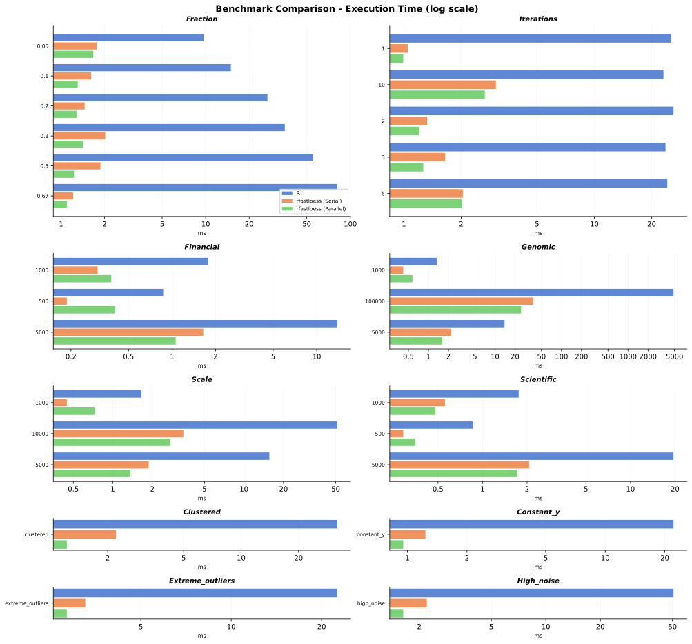

Benchmarks
These are shared CPU reference results from the R comparison harness, not separately measured Julia binding timings. This LOESS implementation has no GPU backend.

The table uses mean timings. Speedups in parentheses are relative to base R's stats::loess; values above 1× are faster than R.
| Scenario | R | rfastloess (serial) | rfastloess (parallel) |
|---|---|---|---|
| clustered | 42.92 ms | 2.40 ms (17.9×) | 1.82 ms (23.6×) |
| constant_y | 27.78 ms | 2.07 ms (13.4×) | 1.62 ms (17.1×) |
| extreme_outliers | 27.74 ms | 4.35 ms (6.4×) | 4.21 ms (6.6×) |
| financial_1000 | 1.48 ms | 0.56 ms (2.7×) | 0.67 ms (2.2×) |
| financial_500 | 0.70 ms | 0.25 ms (2.8×) | 0.66 ms (1.1×) |
| financial_5000 | 13.36 ms | 2.27 ms (5.9×) | 1.71 ms (7.8×) |
| fraction_0.05 | 8.22 ms | 2.70 ms (3.0×) | 4.14 ms (2.0×) |
| fraction_0.1 | 13.74 ms | 2.54 ms (5.4×) | 2.42 ms (5.7×) |
| fraction_0.2 | 24.19 ms | 2.87 ms (8.4×) | 2.25 ms (10.7×) |
| fraction_0.3 | 32.65 ms | 3.26 ms (10.0×) | 3.48 ms (9.4×) |
| fraction_0.5 | 52.39 ms | 2.95 ms (17.8×) | 3.11 ms (16.8×) |
| fraction_0.67 | 75.48 ms | 2.53 ms (29.9×) | 2.57 ms (29.3×) |
| genomic_1000 | 1.34 ms | 0.61 ms (2.2×) | 0.89 ms (1.5×) |
| genomic_100000 | 5 652.21 ms | 51.02 ms (110.8×) | 33.27 ms (169.9×) |
| genomic_5000 | 12.51 ms | 2.79 ms (4.5×) | 2.64 ms (4.7×) |
| high_noise | 70.11 ms | 3.38 ms (20.7×) | 2.45 ms (28.6×) |
| iterations_1 | 22.75 ms | 1.66 ms (13.7×) | 2.87 ms (7.9×) |
| iterations_10 | 22.53 ms | 5.19 ms (4.3×) | 4.45 ms (5.1×) |
| iterations_2 | 23.47 ms | 2.28 ms (10.3×) | 2.68 ms (8.8×) |
| iterations_3 | 23.28 ms | 2.86 ms (8.1×) | 2.55 ms (9.1×) |
| iterations_5 | 22.62 ms | 3.66 ms (6.2×) | 3.26 ms (6.9×) |
| large_direct | 10 066.93 ms | 20 179.44 ms (0.5×) | 9 135.54 ms (1.1×) |
| largehighfraction | 14 587.37 ms | 24.95 ms (584.7×) | 61.71 ms (236.4×) |
| largehighiter | 8 461.60 ms | 2 391.07 ms (3.5×) | 1 099.72 ms (7.7×) |
| large_interp | 1 274.90 ms | 26.95 ms (47.3×) | 18.88 ms (67.5×) |
| scale_1000 | 1.41 ms | 0.80 ms (1.8×) | 4.21 ms (0.3×) |
| scale_10000 | 46.15 ms | 5.13 ms (9.0×) | 8.21 ms (5.6×) |
| scale_5000 | 13.27 ms | 3.06 ms (4.3×) | 4.74 ms (2.8×) |
| scientific_1000 | 1.76 ms | 0.83 ms (2.1×) | 1.02 ms (1.7×) |
| scientific_500 | 0.72 ms | 0.39 ms (1.8×) | 0.66 ms (1.1×) |
| scientific_5000 | 18.38 ms | 3.10 ms (5.9×) | 2.73 ms (6.7×) |